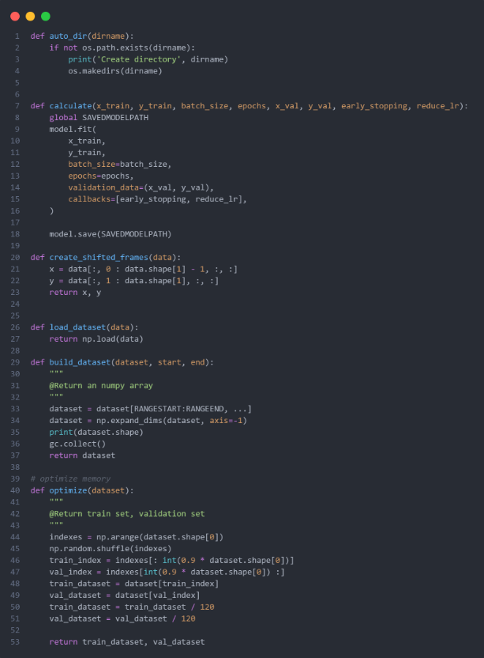
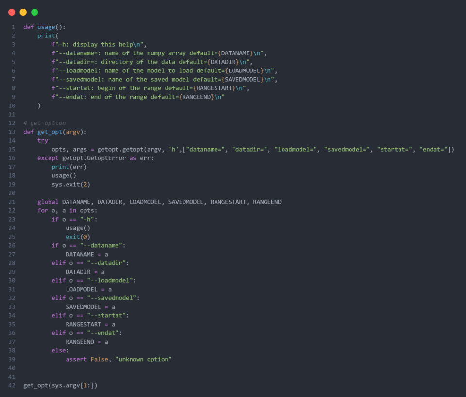
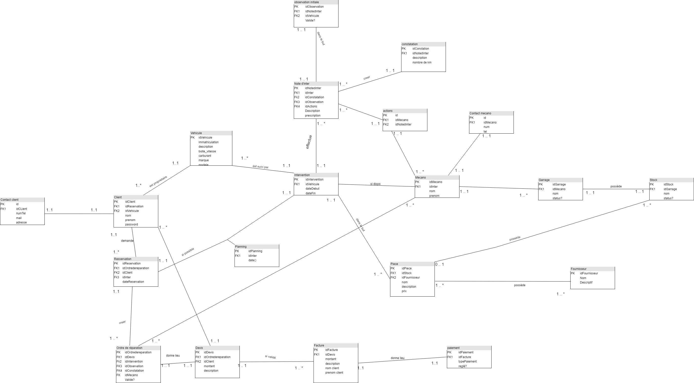
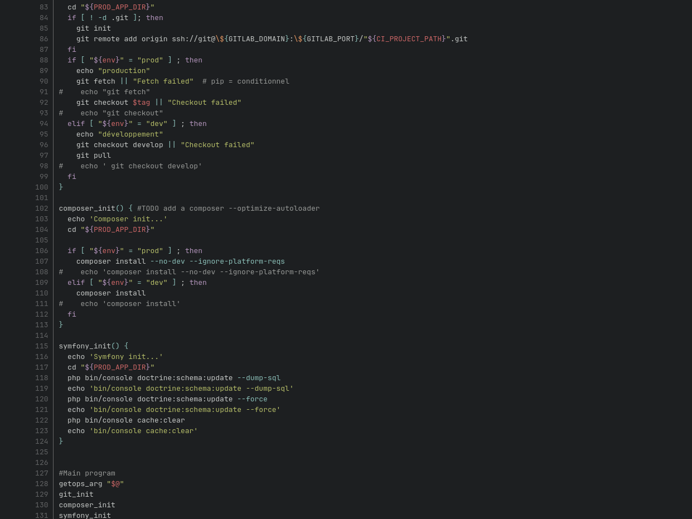
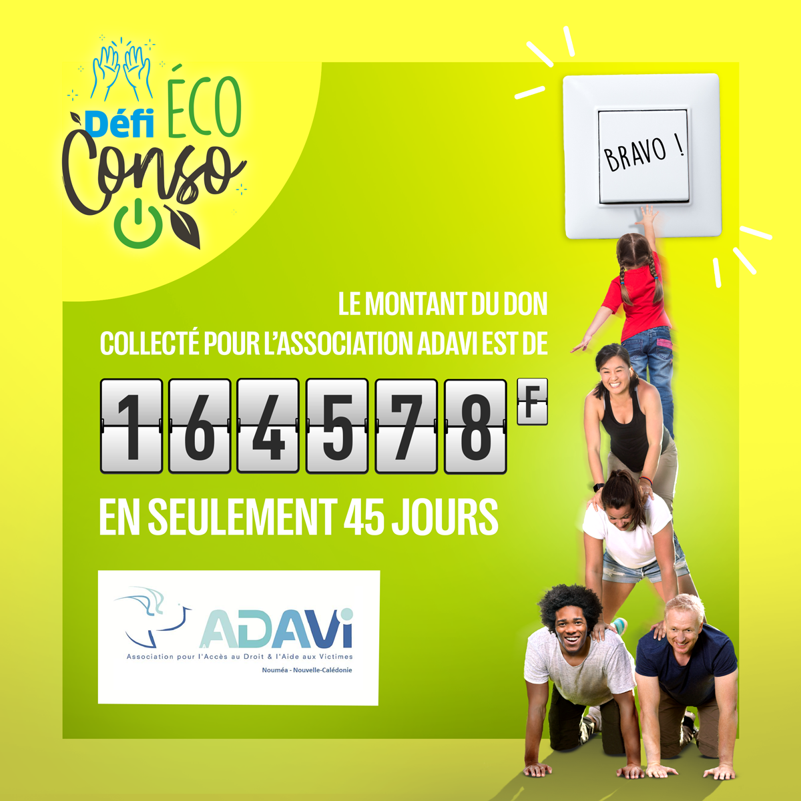
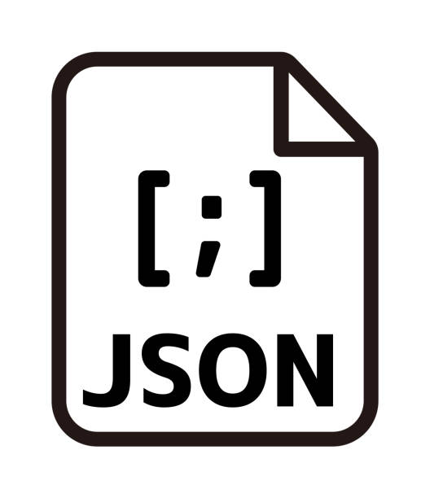
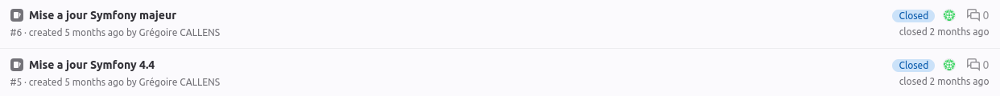
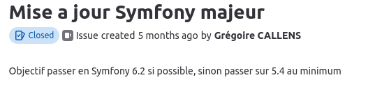
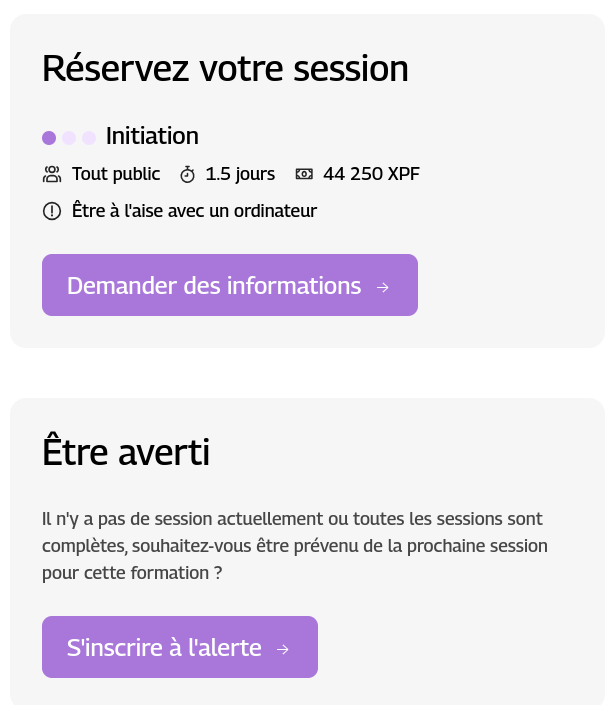
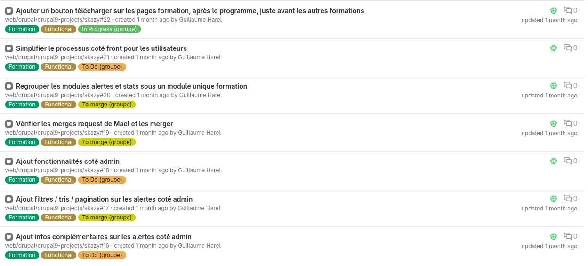

Synthèses de BTS sio
Stage APID (Alternative Prjects For Inteligence In Data)
Contexte de stage :
Mon stage de 1er année s'est déroulé dans la jeune entreprise APID.
Il s’agit d'une entreprise spécialisée dans le développement et la gestion de DATA.
L’entreprise possède à son active 5 personnes dont 2 développeurs.
Durant tous mon stages j’ai été sous le tutorat de ces 2 développeurs expérimentées Thomas Avron et Éric Vidal.
J’ai eu différentes missions qui vont de la conception d’un schéma relationnel de base de données, au développement d'une fonctionnalité pour une application web sous le framework Django.
De plus nous avons participé durant ma période de stage aux océans Hackathon de 2022.
Cette participation nous aura permis de nous placer sur le podium avec le prix local.
Au niveau développement nous avons utilisé des outils de versionings du code tel que GIT héberger sur les serveurs de l’entreprise.
Compétences développées :
-> Analyse d'un cahier des charges
-> Autoformation sur le framework python Django et le machine & deep learning
-> Développement de fonctionnalité sur un applications en production
-> Versioning des différentes codes
-> Rédaction de documentation sur des outils de stack data telle que Airbyte
-> Mise en place d'une VM de calcul sous la distribution Obarun
Océan Hackathon
Mon principale objective durant mon stage était la mise en place
d'un modèle capable de prédire la concentration en glace en Antarctique.
Notre modèle est basé sur l'architecture LSTM (Long Short-Term Memory).
Une fois le modèle établit nous l'avons entrainé durant de longues
heures.
Durant cet entrainement il a observé des milliers d'images
satellites de l'Antarctique.
Nous avons utilisé des procédés de deep learning et machine learning.
Le but de ce projet est d'aider tous les marins afin qu'il puisse
adopte une tactique d'approche convenable.


Les programmes ont était réalisée en python avec les librairies Kereas et Tensorflow .
Afin d'entrainer notre modèle nous avons eu accès un stock d'image fournie par l'université de Bremen.
À partir de ces images nous avons créé notre dataset.

Par exemple le code suivant nous a permis de charger notre dataset et de lancer notre programme :


Une fois que l'apprentissage de notre modèle est fini nous avons pu
lui demander de prédire la concentration en glace autour de l'Antarctique.
Voici les résultats de 15 jours de prédictions
Les images de gauches sont les images fournies par l'université de Bremen
Les images de droites sont les predictions

Mes autres missions
J'ai également travaillé sur la conception d'une base de données relationnelle pour l'application web d'un garage.
J'ai dû créer un schéma relationnel de données cohérent avec les besoins de l'entreprise.
Ce schéma relationnel va permettre de créer la base de données de façon cohérente.

J'ai également travaillé sur une application interne du type GLPI.
Cette application et développées sous le framework Django.
On m’a demandé de créer une fonctionnalité afin de déplacer des utilisateurs dans un groupe spécifique.
Synthèses Alternance
Alternance Skazy
Contexte d'alternance :
Mon alternance s'est déroulé dans l'entreprise Skazy.
Il s’agit d'une entreprise spécialisée dans le développement d'application web et mobile.
L’entreprise possède environs 80 salariées.
Il existe différents poles, communications, integrateur web, developpeur web ...
J'ai eu différentes missions qui vont de la création d'une api rest, au développement d'une application web.
Nous avons utilisé des outils comme git et gitlab pour le versioning du code.
Compétences développées :
-> Méthode agile (SCRUM)
-> Développement d'une api rest
-> Rédaction de documentation
-> Développement d'une application web
-> Montée de versions (Symfony, Joomla, Drupal)
-> Versioning du code
API Rest
J'ai créer une APi Rest pour faciliter le déploiement d'une application web.
Elle permet de pull le dépot gitlab.

Module Symfony
Inscription jeux eco conso EEC
Ajout d'une API pour faciliter les inscriptions avec notre webservice.


Montée de version Symfony
J'ai travaillé sur un projet en symfony 4.4
J'ai du me former sur ce framework similaire a Laravel que je connaissais déjà.


Drupal Module
J'ai du fusioner 2 modules:

